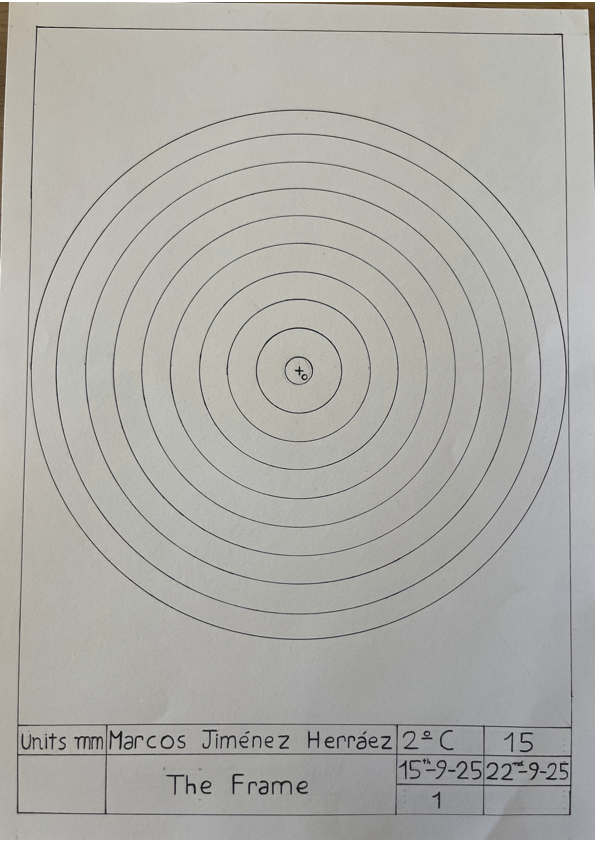

Drawing two interior straight lines to two circumferences.
1. Firstly, I made the frame.
2. Then I made as in the previous activity, but instead of substracting R2, I have added it.
3. Then I made interior tangent lines between the circumferences.
4. Then, when I finished the process and I had made all the tangent points, I coloured the lines.
In this activity I have learned how to draw two interior straight lines to two circumferences.